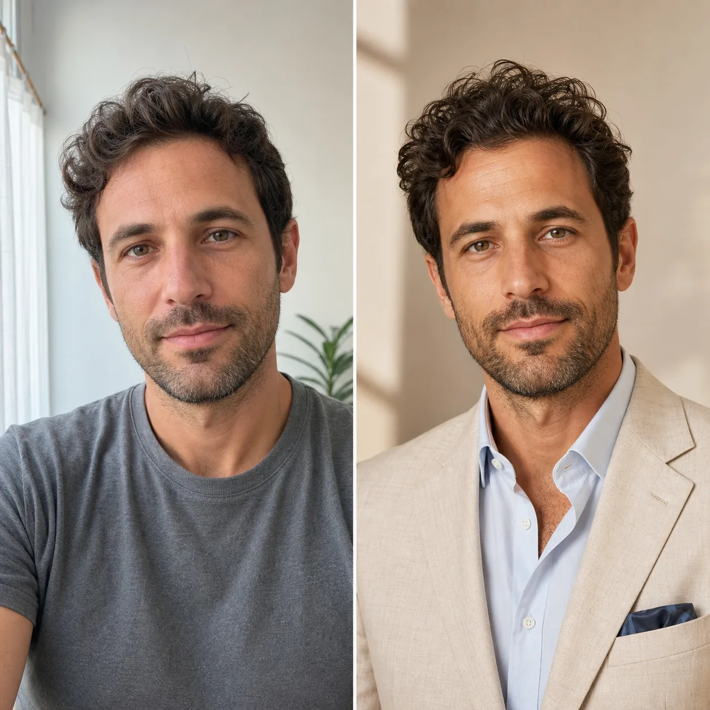
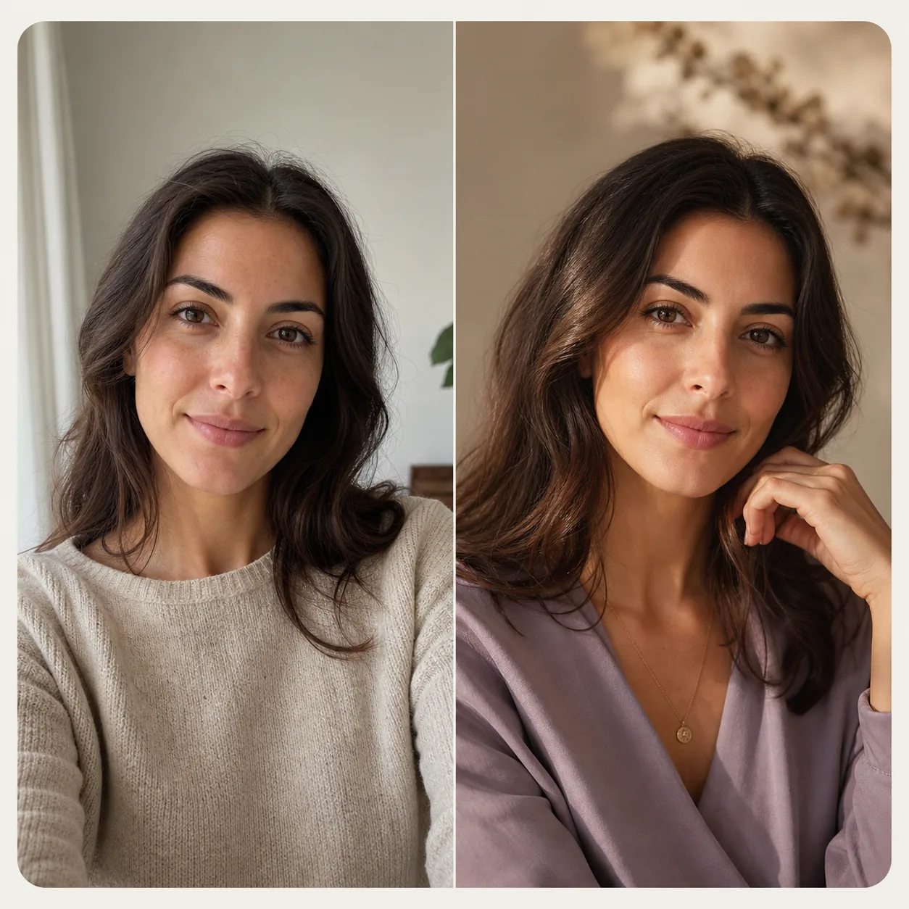
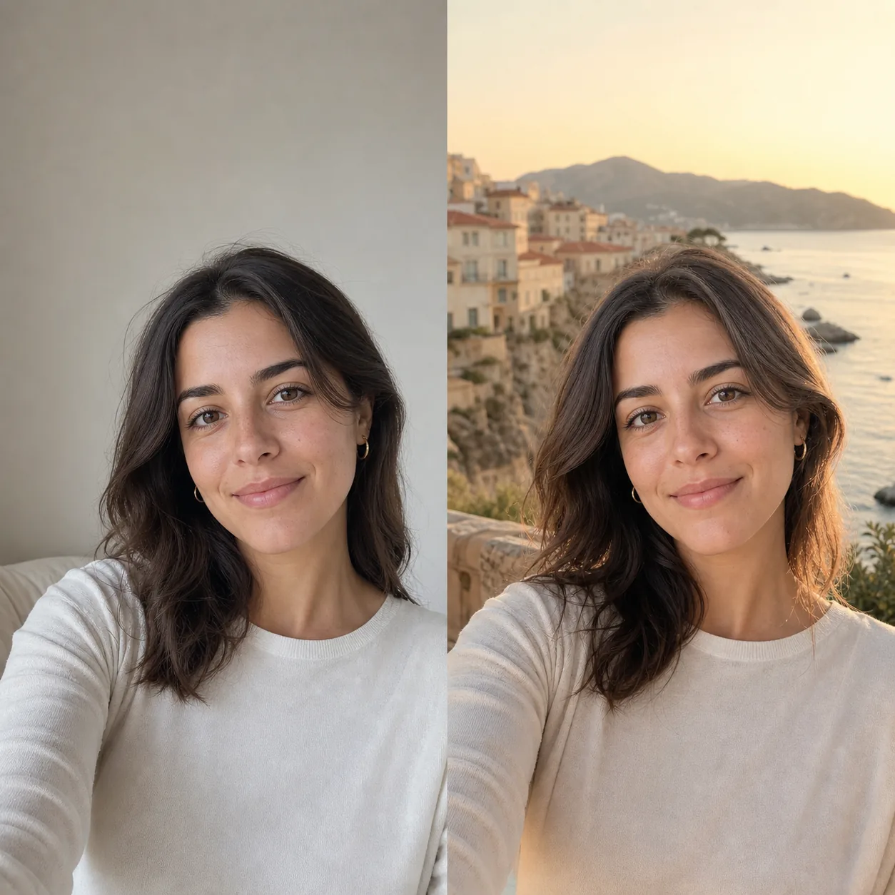
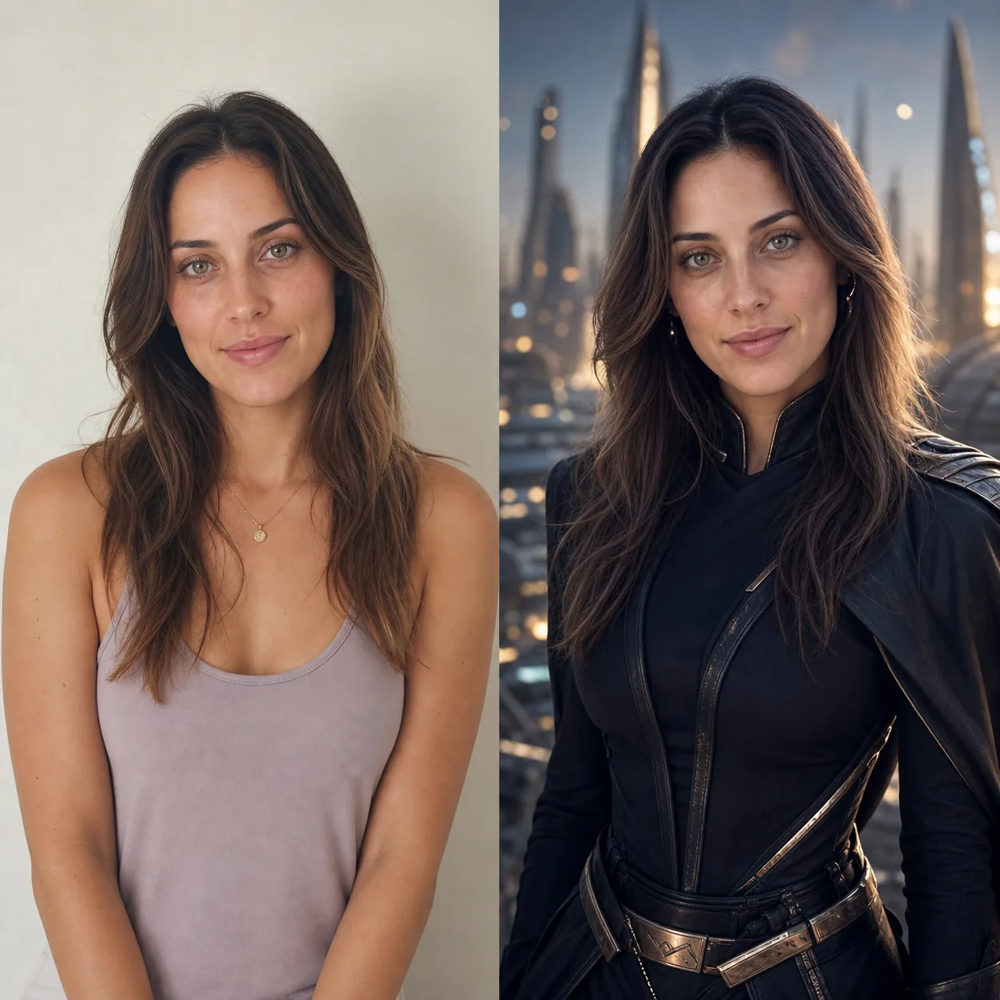

AI-фотостудия для ваших идей
Первые изображения — бесплатно*Проект работает в тестовом режиме
Обычная фотография.
Новый образ по вашей идее.
Профессиональный портрет, новый стиль, другая локация или необычная сцена — всё это можно создать с помощью AI на основе вашей фотографии.
✦ Достаточно фотографии и короткого описания того, что хочется получить.
* Возможность и условия пробного создания обсуждаются индивидуально.

AI-портрет
До → После
Новый образза одну идею
✓
Ваш характеростаётся с вами
Демонстрационные примеры
Посмотрите,
что можно создать.
Демонстрационные пары показывают, как может измениться образ, одежда, фон или атмосфера фотографии. И изображения «до», и результаты «после» созданы с помощью AI — фотографии реальных пользователей здесь не публикуются.
Что можно сделать
Одна фотография —
много возможностей.
Новый образ, другое место или целая фотосессия — вы выбираете настроение, а я помогаю воплотить вашу идею в изображении с помощью AI.

03
Подарок с характером
Создайте особенное изображение для близкого человека или важного события.
Предложить идею ↗
Как это работает
Всё начинается
с одной идеи.
01
Расскажите об идее
Опишите своими словами, какой образ, место или настроение хочется получить.
02
Отправьте фотографию
Подойдёт обычный чёткий снимок с телефона, на котором хорошо видно лицо.
03
Получите результат
Изображение будет создано с помощью AI и аккуратно доработано.
Коротко о главном
Популярные
вопросы.
Несколько ответов о фотографиях, возможностях AI и конфиденциальности.
Какие фотографии подойдут?
Лучше всего подходят чёткие фотографии с хорошим освещением, на которых хорошо видно лицо. При необходимости можно отправить несколько снимков.
Что можно изменить?
Образ, одежду, причёску, фон, место, атмосферу или общий стиль изображения. Идею можно описать своими словами или показать на примере.
Сохранится ли сходство с человеком?
AI старается сохранить основные черты внешности, но результат может немного отличаться от исходной фотографии. Чем качественнее исходные снимки, тем точнее можно передать образ.
Публикуются ли отправленные фотографии?
Нет. Фотографии и результаты не публикуются на сайте или в социальных сетях без отдельного согласия.
Сколько изображений будет создано и когда будет готов результат?
Количество изображений, формат и сроки обсуждаются индивидуально после обращения.
Попробуйте бесплатно*
Покажите, что
хочется изменить.
Отправьте фотографию удобным способом и коротко опишите желаемый результат.
* Возможность и условия пробного создания обсуждаются индивидуально.
✦ Идею можно описать своими словами — детали можно уточнить при обсуждении.
Ваши фотографии используются только для создания заказа и не публикуются без вашего согласия.